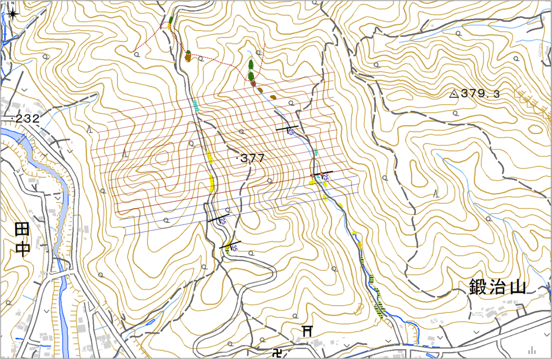
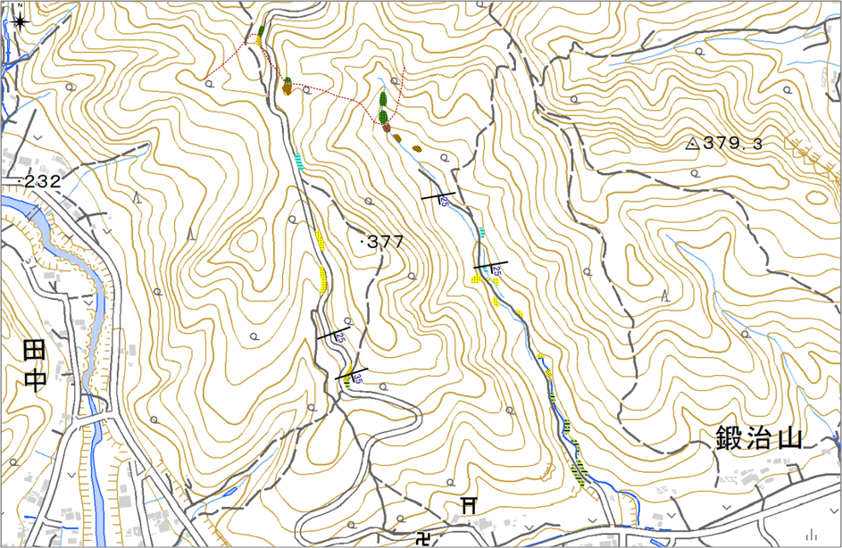
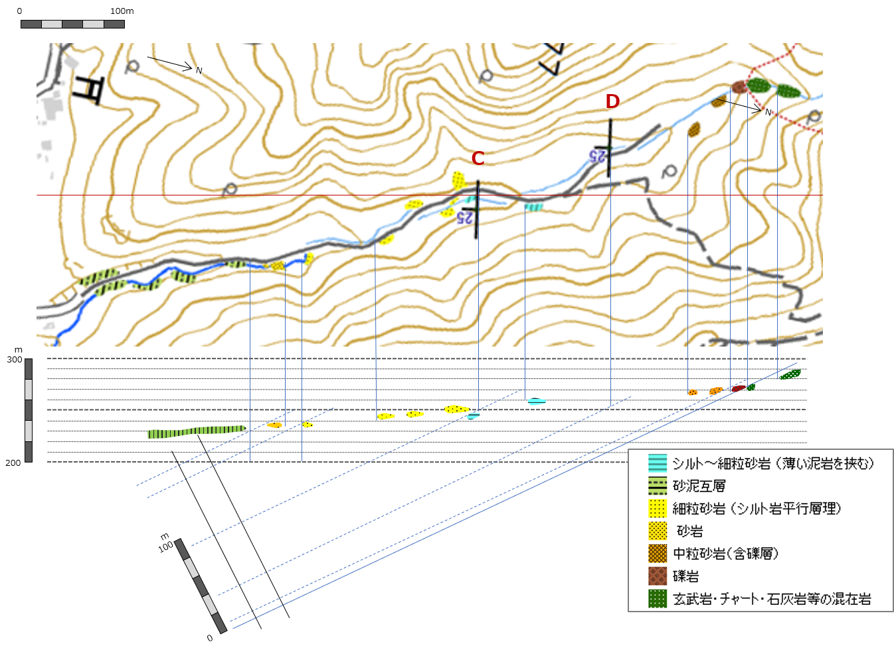

2-5. 演習用ワークシート
⇨ 下記の演習用ワークシートをPDFを表示（またはダウンロード）する場合は、こちら をクリック。
① 境界線作図用地図（１）
地点A（砂泥互層と砂岩の境界）の境界線を引く

② 境界線作図用地図（２）
地点B（砂岩と細粒砂岩の境界）の境界線を引く

③ 境界線作図用地図（３）
地点C（細粒砂岩とシルト岩の境界）の境界線を引く

④ 境界線作図用地図（４）
地点D（シルト岩と中粒砂岩の境界）の境界線を引く

⑤作図用地図
①～④で描いた境界線をこの地図に転写して、各地層面の色をつけて地質図を完成させましょう。

⑥ 柱状図を作成する（１）― 西側林道沿いルート ―
柱状図を作成するには、まず走向方向と垂直になるように断面図を書きます。 そして、傾斜角の分だけ傾けて（層理面と垂直となるように）プロット軸をとって、そこに露頭の地層を記入します。

⑦ 柱状図を作成する（２） ― 東側沢沿いルート ―
